The main idea of our algorithm [8] is based on the known feature of affine transformations: transformation of a given rectangle is completely conditioned by transformation of three of its corner points.
As previously, we work inside a unit square Su of pixels for which
we select three corner points
(s0, st, sr), s0 being left
lower corner, st left top corner, sr right lower corner. For
every  (
(
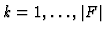
) we only compute images of these three corner points,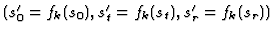
. Then we define offsets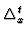
=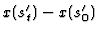
,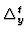
=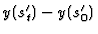
,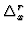
=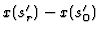
, and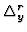
=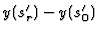
and use them in computing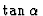
and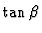
, where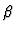
- the angle with y axis. This computation gives us the set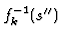
of points which are transformed by fk onto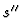
and, therefore, the synaptic weights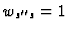
. Horizontal size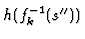
and vertical size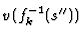
of the rectangle are determined by the contraction factors of fk on x and y axes and calculated only once for each fk. The inclination of each side of the rectangle is taken into account by and , respectively.The dynamics of the neural network is the same as in the Stark's algorithm.